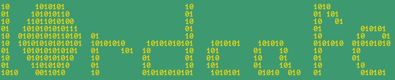
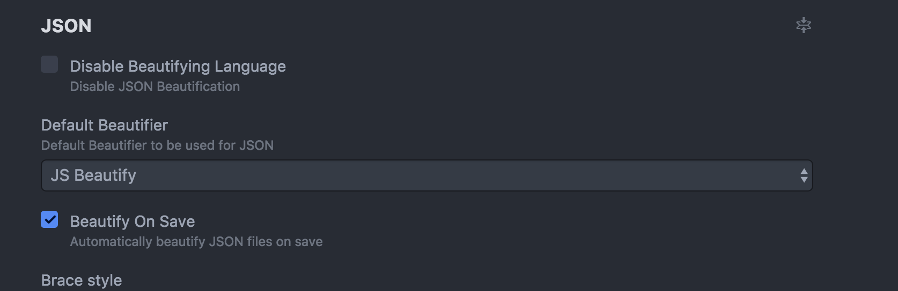

👑  👑
Ismail Arafa is a junior web developer 💻, accomplished musician 🎼, and huge cheese 🧀 fiend.
Based in Toronto, Canada
🍁
🐪 Story 🇪🇬 🇨🇦
Originally a desert dweller, l0rdcafé stumbled upon the art of coding one day and, eager to learn more, he traversed the Atlantic Ocean 🌊 through a combination of camel back riding, telekinesis and sheer willpower.

After an arduous and tasking journey, he finally made his way to Canadian shores where he would pursue his passions for melting cheese and crafting a myriad of web creations.
💾 Projects 💾
2-Do List
I am very excited to share with you my first web application! As underwhelming as a 2-Do List might feel, I try to always remember that almost 90% of all web applications has some sort of 2-Do List at its base.

As you can see in the picture above, this is how the 2-Do List looks when filled out with some of the states of the items altered.

Additionally, you can edit an entry and also its date simply by clicking on the edit button, and then saving the change(s) by clicking the save button.
If you haven't checked it out yet, here's the link for the 2-Do List, and for those Vanilla JavaScript hackers, here's a link to the master repo.
June 1, 2017
Welcome to my first project! This was built in Sketch shortly after learning the basic skills of design. The project was a website for a fictional app that eradicates your bureaucratic nightmares. There are four different device-sizes where the design was adjusted to fit within said devices, for the full PDF click here.

The picture above outlines how the 600px screen width main section would look like. With the 3-column grid present in both the 1200px and 768px sizes being switched to rows.
The main logo for the app is as shown above, I simply masked an image of an eagle in three different rounded rectangle masks for the wings and the head respectively, and used the U from the company name in the middle of the logo.

This last picture shows the 320px device width design. The main section is similar to the 600px artboard, however, the content is centered and more vertical.
May 8, 2017For more, check out GitHub.
🎼 🎸 Music 🍺 🎙️
🍺 Live
EPs 🎼
عزيزي فادي - "Dear Fady" (2014) 🎙️
إندي جامد - "Heavy Indie" (2014) 🎙️
🤔 Thoughts 🤔
💭 Programming With JavaScript: Or How I Learned to Stop Worrying And Love The Debugger 💭
Hey hacker friends!
Ur fam; l0rdcafe here. This installment is about JavaScript, or in other words my first foray into proper programming.
Two weeks ago, I had little to no programming experience whatsoever. I’d read a few tutorials and seen some JavaScript syntax, enough to scare me away from programming for browsers. However, I decided it was time to face my fears and program for the web.
I started off by reading and doing the exercises for A Smarter Way To Learn: JavaScript by Mark Myers; a quick and to the point programming book that teaches you the foundations of the language whilst maintaining basic practicality. After finishing the book, I signed up and completed the Practical JavaScript course at Watch and Code, building a basic to-do list with the instructor. Where he goes into thorough explanation of all aspects of the program in an intuitive and practical way.
Beyond the Watch and Code tutorial, I decided to implement some extra features to the application like expired items, urgent items, item counters and other UI features. That proved to be the most educational part of the process as I encountered every programmer’s best friends; bugs.
I quickly learned that you constantly need to maintain a readable, consistent and focused codebase to simplify debugging, adding features and most of all avoid mistakes. Moreover, I also learned that refactoring is necessary as a program gets bigger, and the usage of helper methods and/or functions comes into play much more prominently as an application expands.
One of the more challenging undertakings of the application was date validation, but from Mark Myers’ e-mail address validation explanation in A Smarter Way To Learn: JavaScript, some stubbornness, and a lot of persistence, I managed to validate the date input to the desired format and also list items as either ‘Urgent’ or ‘Expired’ according to their due dates.
Another essential ally in my programming endeavor was a browser’s debugger and console. Using the debugger to pause the program at specific points to catch bugs, going through the program line and line, stepping in and out of functions, and examining the program’s behavior. As well as logging variables, calling functions and others in the console to ensure everything runs, as it ought to.
Finally, and after much effort I had finished my 2-Do List with the features and functionality that I intended it to have. I’ve always disliked boasting, but I got to say that I do feel proud in this first moment of programming victory.
June 1, 2017💭 Hacking Graphic Design or Sketch for Devs 💭
Hey hackers, designers and design hackers.
It's your boy l0rdcafe. This post is a brief overview
of my experience learning graphic design basics with Sketch. I'll be going through what I learned, built, and how useful these new skills are.
Sketch is a lighter and more affordable alternative to Adobe Photoshop. Sketch simplifies some tasks that otherwise would be rather complicated to execute in other applications.
It's also an extremely light application and moreover, allows you to copy the CSS of any asset to the clipboard and paste it to a text editor. Compared to Photoshop or other graphic design software, the CSS given by Sketch is incredibly clean, easily readable and concise.
Secondly,I used Lynda to complete a series of 4 Sketch courses. Starting off with Sketch Essential Training: The Basics, and designing the mockup website with the instructor using the downloadable exercise files. I quickly picked up on the basics of Sketch and hardly found anything too cumbersome to do.
From creating artboards, to drawing vector icons, creating symbols, and finally building a responsive website for 4 devices. This course covered the essential Sketch basics to be able to create, edit and export assets for web development or other purposes.
Afterwards, I completed the Sketch: Creating Vector Graphics course, which gets more into vector graphics in terms of drawing, editing, custom borders, Bezier vectors, Boolean operations and that culminated in building an average navigation toolbar.
The penultimate course named the Sketch: Style Guides & Asset Libraries concerned style guides, asset libraries and how to manage and build them both efficiently as well as professionally. By the end of the course, I'd learned how to build my own asset library by combining other libraries, how to properly name assets and organize them in case of collaborative work, and finally how to share asset libraries with others.
Lastly, Sketch for UX Design was the last course I finished and it was almost an aggregate of all the aforementioned skills giving a broad outline of Sketch and how it can be utilized to build for a range of devices including the likes of Apple Watch. Also, the course gets into several plugins, Sketch App Sources and how the Sketch Toolbox can be used to install a plethora of plugins created by the vibrant Sketch community.
To wrap up, Sketch is an impressively user-friendly tool that allows designers, and developers to quickly draw up mockups, create icons, assets, asset libraries, among numerous other functions. With my newly-acquired Sketch nous, I made a fairly simple l0rdcafe logo (See?) as well as a mockup responsive design of a website for a fictional app for 4 devices in the projects section.
May 8, 2017💭 How To Setup Your Macbook Pro To Be More Efficient for Editing Code (For New Web Devs) 💭
Hey hacker friends!
It’s l0rdcafé. I fleetingly mentioned the term tech stack in the previous post. Here, we go deeper into that and how
to set up a well-organized workflow especially for new web developers on Mac.
- iTerm2
- Homebrew
- Node
- Easier to read manual pages
- Setup your Shell with Prezto
- Faster directory navigation
- Efficient CSS workflow
- Linters and other plugins
- Autoprefixer
iTerm2
If you’re still using the default Mac Terminal, bin that instantly and download iTerm2. Press Cmd-N, instant improvement, right?
iTerm2 unlike Terminal, is very customizable. So give the preferences a look and toy with the colors. Additionally, you can download preset color schemes.
Homebrew
Before you go any further, you should install Homebrew. It'll give you quick access to a plethora of software by running simple commands, dubbed as the missing package manager for macOS. Copy/paste the command into your terminal.
Node
Up next is Node, which after installing Homebrew becomes a much simpler task. Run brew install node. Now, run node -v to see if it's installed, and then also npm -v. If it is, you should see something similar to this.
Easier to read Manual Pages
If you know some basic
UNIX command line and know about the man pages, which are notoriously dizzying to read, then you should start off by installing tldr. Simply run sudo npm install –g tldr,
then run tldr echo to see if it works. The sudo prefix might not be necessary, depending on your admin preferences. But if you run the command without it and returns an error, then it will be.
Shell Setup with Prezto
The default Shell is .bash, which isn’t necessarily the most efficient. You can tell which Shell is running by looking at the top of your terminal window.
That’s where Prezto comes into play, a .zsh framework enriching the command line interface with aliases, sane defaults,
prompt themes and most importantly auto completion; a true savior!
Run zsh to start a .zsh session and follow the installation instructions carefully.
As with most things, you'll need to customize your Prezto modules. So go to your home directory by running cd, then run ls -a and check to see if there's
a .zpreztorc. If there is and there should be, open that file in your text editorand make sure the modules from line 26 to 44 are in the following order.

Faster Directory Navigation
Moreover, if you’ve used the cd command enough, you’ll know how consuming directory navigation can be. Run brew install fasd and now you can use the command j with any directory that you’ve
visited before as its argument to navigate instantly there. Here's an example of it in action.
Efficient CSS Workflow
Writing CSS can be a pain when you have to refresh the page on your browser with each saved change. That’s why browser-sync exists, run sudo npm install –g browser-sync,
then tldr browser-sync (Aha!) for examples on how to use it.
Linters and Text Editor Plugins
Now it’s time to upgrade your text editor. Personally, I picked Atom at the start and have been using it ever since, so this is going to be catered to that but feel free to look up equivalent upgrades for whatever text editor you end up choosing. Linters are packages installed in a text editor that, given specific settings will clean up your code and pick up on any syntax errors. This is a pretty long list, since you have to install linters for each language. However, I highly advise against copy/pasting and to actually type in each command.
apm install linter-csslint
apm install linter-htmlhint
apm install linter-jsonlint
apm install linter-scss-lint
apm install linter-markdown
apm install linter-eslint
apm install linter-stylefmt
apm install linter-write-good
apm install atom-beautify
apm install git-diff
apm install jquery
apm install pigments
apm install file-type-icons
apm install open-recent
You will need to customize some of these plugins. Firstly, create a ~/.eslintrc file and write the following in it.
Then your beautify settings should match those in the following image.
You'll also need to tick the box for Use global ESLint installation as well as specify the .eslintrc Path to the ~/.eslintrc file created earlier. You can implement these changes in the linter-eslint plugin settings
as shown below. Additionally, you should run npm get prefix and input the result into the Global Node Installation Path box.

Autoprefixer
Beyond linters, an autoprefixer will be your new best friend. You'll never have to hardcode vendor prefixes again. By simply running apm install autoprefixer and setting it to prefix
on save, you can simply code, save and vendor prefixes will be prefixed automagically.
That’s it for the web developer starter pack. These tools will help you establish an efficient workflow and save you time and cognitive load to work on other less trivial issues as opposed to figuring out vendor prefixes for random properties.
April 27, 2017💭 My First Open Source Contribution 💭
Hey hackers!
l0rdcafé here. This post is about version control, how I learned git and in turn my first open source contribution.
Up until then, my technical proficiency with version control was limited. I had a basic workflow to initialize a repository, add files, commit changes and push repositories to a remote server, in my case
GitHub but that was about it.
My git workflow was a product of the aforementioned Learn Enough tutorial on version control, GitHub’s Guides and trial and error within reasonable limits. Until one day after updating my tech stack, (more on that to come later!) and getting browser-sync, which starts a local web server that updates browser on file changes. I noticed the tldr pages were missing a page for browser-sync after needing to look up some syntax examples.
Seeing an opportunity to contribute, I went to the GitHub tldr repo, forked a copy from its master branch, and created my one-page contribution to the tldr. Again, jellyc0la’s guidance was invaluable to my success, helping me ensure adherence to the standardized format of the tldr pages. Inevitably and due to my inexperience with git as well as the CI server, I committed one too many changes.
Fearful it might reflect a lack of professionalism, I learned about git rebase with the help of jellyc0la, which enables you to alter the history of commits in a variety of ways. And after mostly trial and error, tweaking the git log, I pushed my changes for submission. My contribution finally passed the CI and was to be reviewed by the maintainer. Within a day or two, the first maintainer approved the changes, and notified the second maintainer to review my pull request. A month later, it was finally approved and my contribution was merged to the master branch of the tldr pages.
In conclusion, even though I was inexperienced with version control; my workflow, technical sophistication and knowledge lacking, my first open source contribution helped me learn more git and gain valuable experience under my belt with pull requests, forks, git rebase even more than tutorials ever did. And this goes to show that nothing beats immersion when it comes to learning.
April 27, 2017💭 Introduction 💭
Hello, world. At the turn of the year, my hacker buddy jellyc0la linked me a series of introductory tutorials titled Learn Enough, and ever since I’ve been on a deep dive into the expanding universe of web development. He mentored me through a well-crafted curriculum, starting with front-end web development, and relentlessly emphasizing learning the fundamentals of concepts deeply.
After covering some basic UNIX command line, basic version control and HTML, next up was The Odin Project’s HTML5/CSS3 course, a great selection of resources and interesting projects. The projects ranged from cloning the Google homepage, to its results page, a YouTube page, an older version of the apple.com homepage and a New York Times article employing a range of concepts like HTML forms, CSS Box Model, Responsive Design with media queries.
Luckily I had jellyc0la’s guidance a text away to triple-check my work, which proved the importance of fresh eyes and good mentorship. A particularly painful episode when an extra “/” prevented a YouTube logo to render properly in the header springs to mind.
Instead of using a framework like Bootstrap, I accumulated enough technical sophistication to build my own cc-ss library, using resources such as Skeleton, clrs, font-awesome, and normalize. Along the way, I read a couple of SASS tutorials as well that were helpful in writing my framework efficiently. As my knowledge expanded, so did my arsenal of tools. I upgraded from the default Mac Terminal to iTerm2, decked out my Atom text editor with packages and established a streamlined workflow (More on that later!). Most importantly, I ensured daily progress covering new ground and working on at least a project a day.
The main benefit of deep learning is a better understanding of frameworks, libraries and even languages like SASS, which I found more intuitive after covering main CSS concepts. Beyond HTML and CSS, I’ve read the first couple of chapters of EloquentJS, a book that is a favorite amongst many programmers.
Although my current programming sophistication fails to show for any notable achievements, I intend on immersing myself and delving as deep into programming concepts, frameworks, libraries and everything in between as I did before. So stay tuned for the exciting upcoming projects!
April 27, 2017🧀